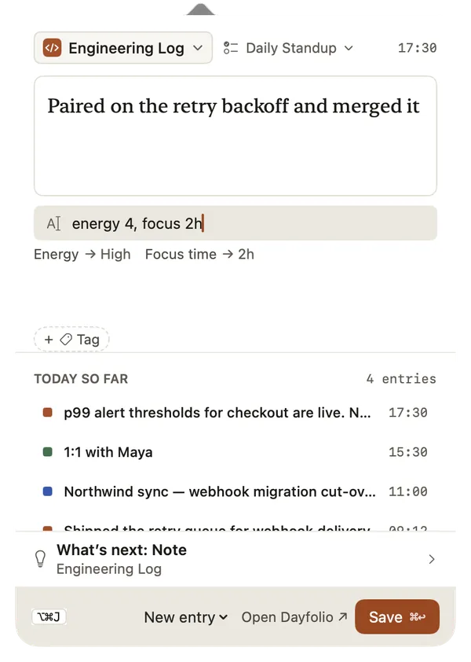
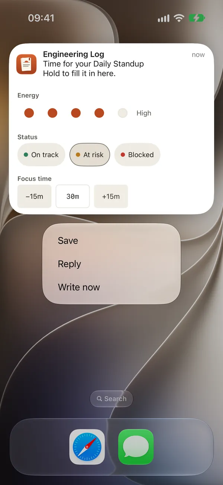
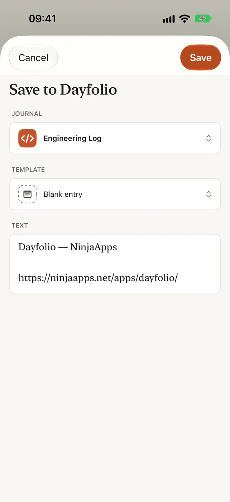

Quick capture
The best moment to write something down is the moment it happens, usually while you’re in another app. Dayfolio has several ways to capture a note without stopping what you’re doing. Each one makes an ordinary entry, and what you typed is never thrown away, even when it can’t be saved yet.
Quick entry on a Mac
Press ⌥⌘J anywhere, or click Dayfolio’s icon in the menu bar. A small window opens with the cursor already in the note.
- Type your note. Add tags with + Tag.
- Choose the journal at the top if it isn’t the one you want. Quick entry remembers the last one.
- Press ⌘↩ to save. The window closes and the menu-bar icon shows a tick.
To write in a template instead of a plain note, open the Quick note menu and pick one of the journal’s templates (⌘1 to ⌘5, or ⌘0 for Quick note). A Fill line appears under the note: press Tab and type values, such as energy 4, focus 2h, status on track, and they’re saved with the note. See Templates and fields.
Under the note, Today so far lists what you’ve written today, and a What’s next row suggests the entry you’re most likely to want, such as the template a reminder just asked for. Open Dayfolio brings the main window forward.
A draft you close without saving is kept until you come back. You can change the shortcut, hide the menu-bar icon or open Dayfolio at login in Settings › General › Quick entry.

Notes from a terminal or a script
On a Mac, a link can write a note without opening a window, so a terminal command or a git hook can log your work. Turn it on in Settings › General › Quick entry › Write notes from links. Dayfolio makes a key for your Mac and shows a line to add to your shell profile, with the key already in it. After that,
note Fixed the flaky CI jobwrites the note to quick entry’s journal while Dayfolio stays in the background. A link without your key writes nothing, and a link never writes into a journal you lock. The full setup, including a git hook, is on the support page: Writing notes from links. In the app, it’s Help › Writing notes from links.
Drop onto a journal
Drag text, a link, a picture or a file from another app onto a journal in the sidebar, on a Mac or on an iPad with the sidebar showing. Dayfolio adds it to that journal as a note dated now, and a message says “Added to Northwind Client” with Open and Undo. Hold ⌥ as you drop on a Mac to open the New entry sheet with it instead. Up to ten files go at once, each up to 50 MB.
Reminders that take an answer
A reminder nudges you to write in a journal at the days and time you choose. To add one, open the journal’s settings, go to Reminders and choose Add reminder: pick the days, the time, the template (or any entry) and, if you like, a message. Templates such as Daily standup and Billable day suggest a reminder when you add them, under Suggested. A reminder is skipped on a day you’ve already written that entry.
When a reminder arrives, you can answer it without opening Dayfolio:
- Write now opens the New entry sheet with the journal and template ready.
- Reply writes your answer as an entry.
- Quick fields: touch and hold the notification on iPhone and iPad, or use its arrow on a Mac, and fields from the template appear above Reply: its project as chips, a rating or mood as five dots, a choice such as a status as coloured chips, and a duration with −15m and +15m. Tap what applies and choose Save. The notification confirms where it went, such as “Saved to Engineering Log”.

Reply and quick fields ask for Face ID, Touch ID, your passcode or your Mac’s password first, and they’re offered only for journals you don’t lock; a locked journal’s reminder has Write now only. Settings › Reminders shows every reminder and has one switch to pause them all. To quiet some journals’ reminders during a Focus, see Siri, Shortcuts, widgets, Control Center and Focus.
The Share sheet on iPhone and iPad
In any app’s share sheet, choose Dayfolio. The Save to Dayfolio sheet shows what you’re sharing, such as the text and the page’s link, and any files by name and size.
- Pick the journal and, if you like, a template. A blank entry is the default.
- Choose Save.
The entry is written without opening Dayfolio. A journal you lock is listed with a lock and is written to without being opened.

Camera and scanner
On iPhone and iPad, an entry’s Add attachment menu can take a photo or a video with the camera, or scan a document into a PDF, straight into the entry. Nothing is saved to your Photos library. A photo records where it was taken only when its journal captures location.
Siri, Shortcuts and widgets
You can also capture by voice with Log in Dayfolio, from a Home Screen widget or from Control Center. See Siri, Shortcuts, widgets, Control Center and Focus.
What’s free
Every quick capture is a new entry, so it counts toward the free version’s 100 entries. At the limit, nothing you typed is lost: quick entry keeps your draft, and the Share sheet keeps your text until you cancel. Adding pictures and files to entries comes with the full version; the Share sheet then offers to save the text alone.
Related
- Templates and fields
- Locked journals and privacy
- Getting started
- Templates with a suggested reminder: Daily standup, Billable day, Weekly review